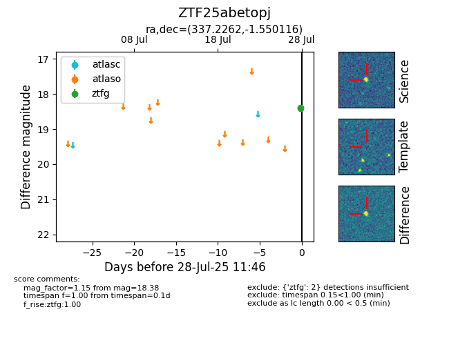

Target ZTF25abetopj at 2025-07-28 11:46, see:
FINK: fink-portal.org/ZTF25abetopj
Lasair: lasair-ztf.lsst.ac.uk/objects/ZTF25abetopj
ALeRCE: alerce.online/object/ZTF25abetopj
alt names
ZTF25abetopj (ztf,fink)
coordinates:
equatorial (ra, dec) = (337.2262,-1.55012)
galactic (l, b) = (63.6757,-47.34262)
photometry
last ztfg=18.38
2 ztfg detections
